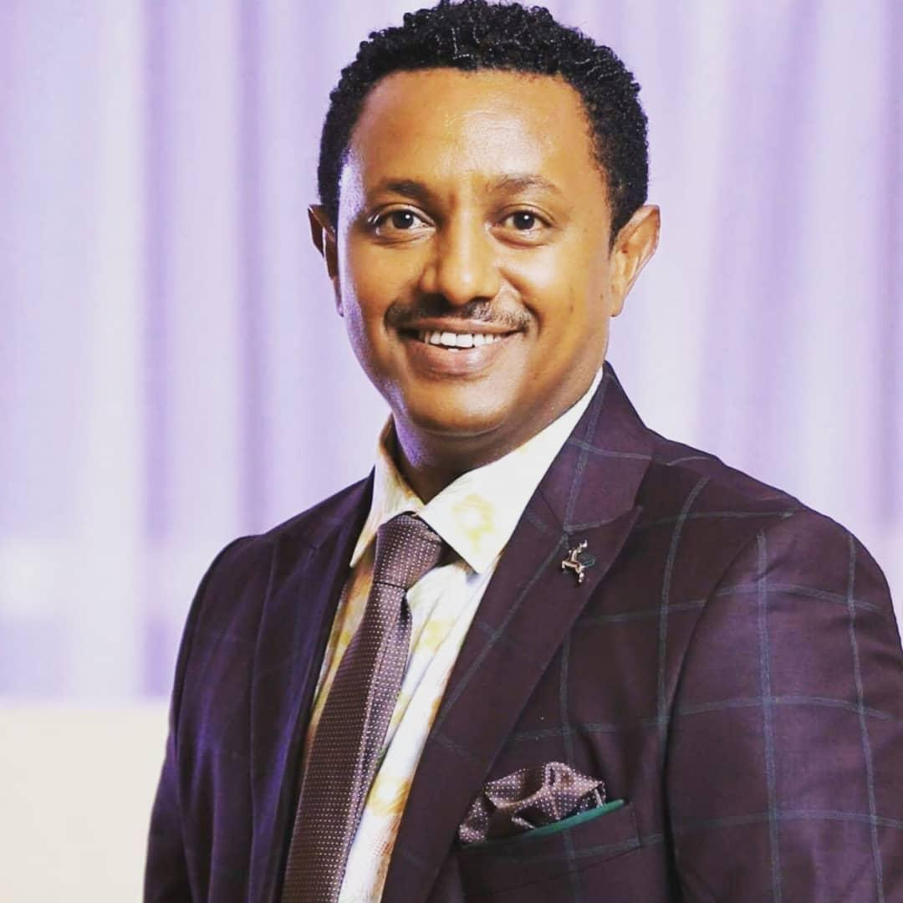

Tedy Afro is one of the most influential and beloved musicians in Ethiopia. His real name is Tewodros Kassahun, and he is known for creating songs that combine beautiful melodies with powerful messages about Ethiopian history, unity, love, and culture. Through popular songs like Jah Yasteseryal and Tikur Sew, he has inspired millions of people and sparked deep national conversations. His music often reflects pride in Ethiopia and encourages peace and togetherness among people. Because of his strong voice, meaningful lyrics, and cultural impact, Teddy Afro is not just a singer but a symbol of identity and inspiration for many Ethiopians. whose real name is Tewodros Kassahun, is one of the most influential and iconic musicians in Ethiopia. Born and raised in Addis Ababa, he grew up in an artistic environment, as his father was a well-known Ethiopian artist. From a young age, Teddy Afro showed a deep passion for music, which later grew into a powerful career that would impact millions of people across the country and beyond.

He became widely famous in the early 2000s with songs that were not only entertaining but also meaningful and thought-provoking. His breakthrough album, Jah Yasteseryal, made him a household name in Ethiopia. What makes Teddy Afro unique is his ability to combine music with history, culture, and social messages. Many of his songs talk about unity, love, peace, and national pride, encouraging people to come together despite differences. One of his most famous songs, Tikur Sew, is a tribute to Haile Selassie and highlights Ethiopia’s rich history. Through such songs, he educates younger generations about the country’s past while inspiring a sense of identity and pride. His album Ethiopia is also widely celebrated for its strong message of hope and unity. Teddy Afro’s music is loved not only because of its deep meaning but also because of his unique voice, emotional delivery, and traditional Ethiopian sound blended with modern styles. His concerts are known to attract massive crowds, where thousands of fans gather, sing along, and celebrate together. These performances often feel more like national events than simple concerts because of the strong emotional connection people have with his music. Throughout his career, Teddy Afro has faced challenges and controversies, but his influence has remained strong. His resilience and dedication to his art have made him a symbol of perseverance and courage. Many people see him not just as a musician but as a voice of the people. In simple terms, Teddy Afro is more than just a singer—he is a cultural icon, storyteller, and inspiration. His music continues to shape Ethiopian society by spreading messages of unity, love, and pride, making him one of the most respected and celebrated artists in the country.